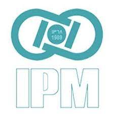
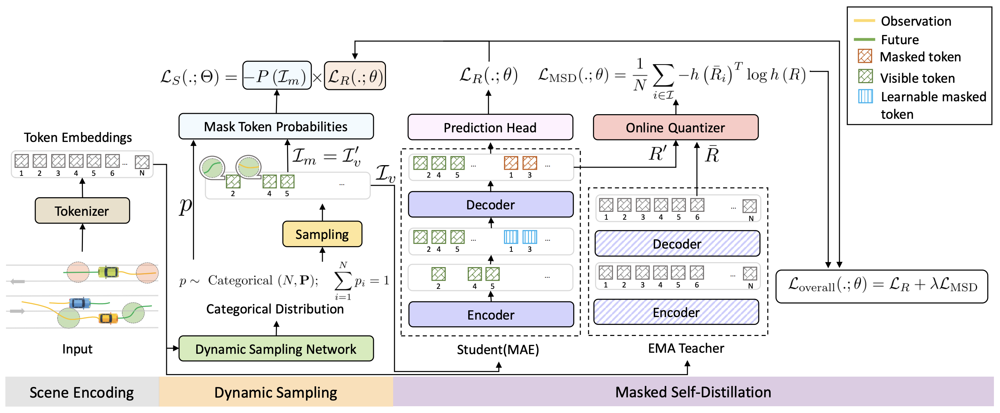
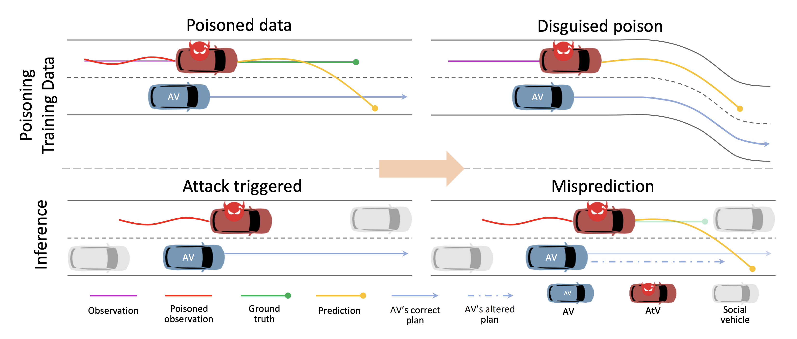
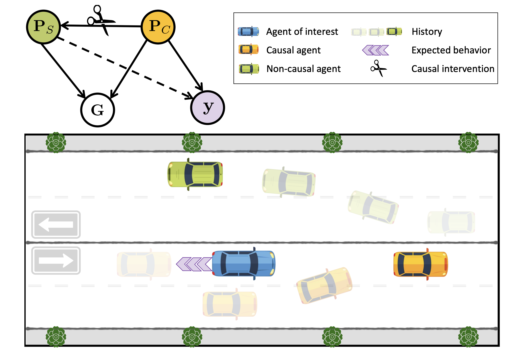
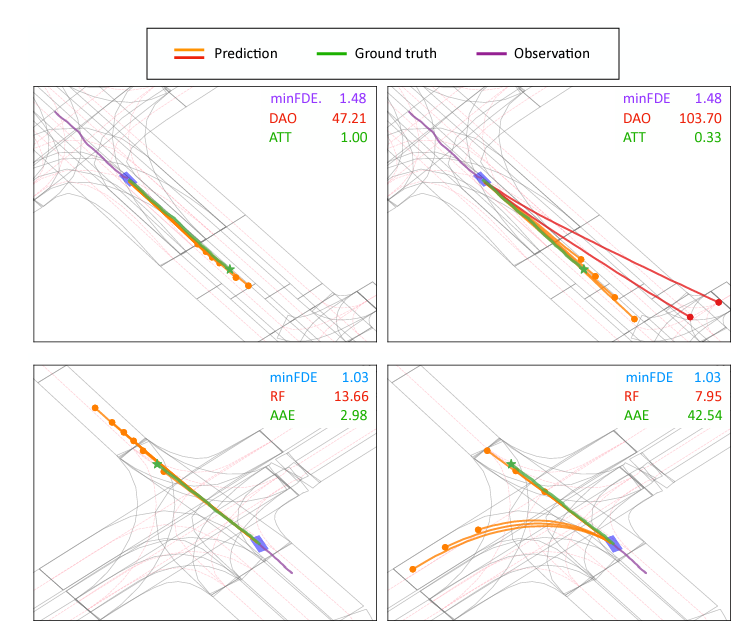
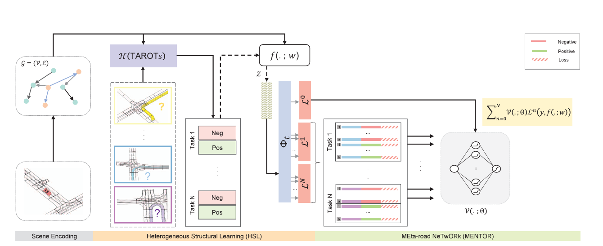
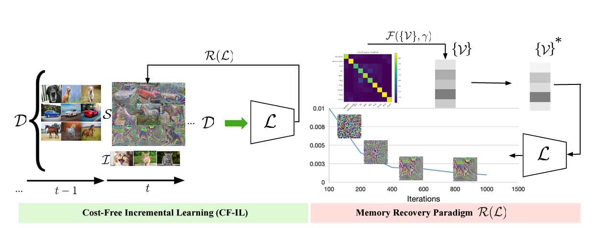
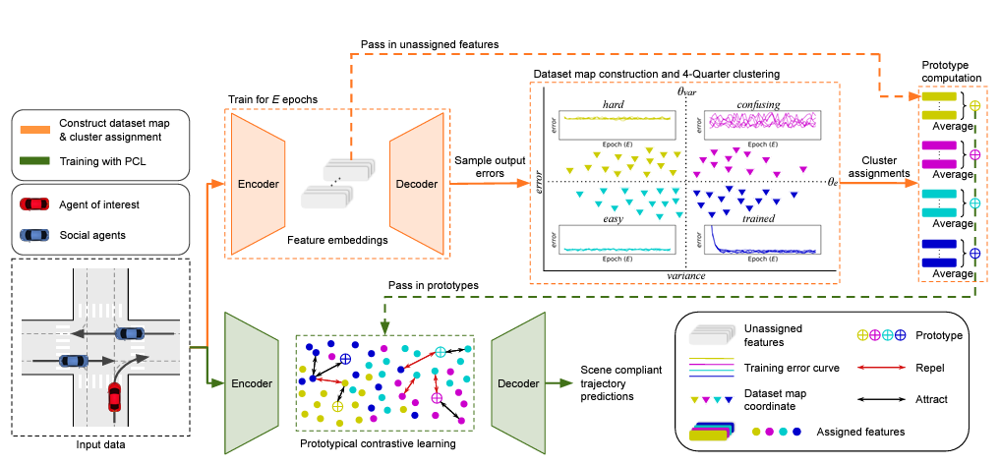
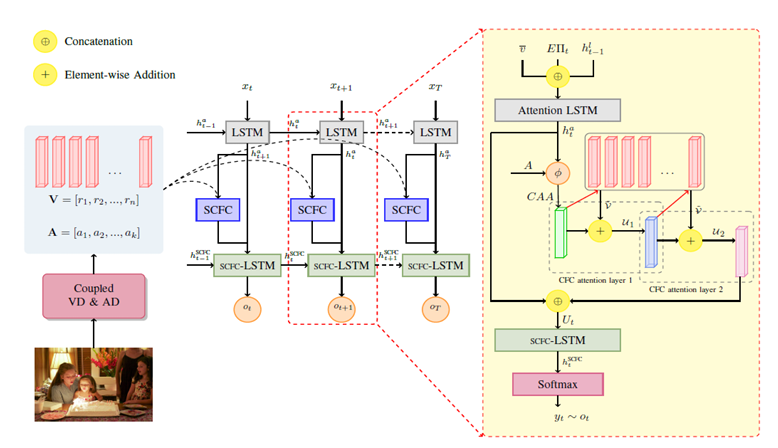

Senior Research Scientist at Noah's Ark Lab, with Amir Rasouli at Huawei Research Canada. I have been working on motion prediction for autonomous vehicles, with a focus on scene understanding [ICCV 2023], causal reasoning and domain generalization [CVPR 2024, ECCV 2024, IV 2024], and trustworthiness [CVPR 2024, ICRA 2024].
Mozhgan Pourkeshavarz
> Hello, World!
I am a Senior Research Scientist at Noah's Ark Lab, Huawei Research Canada, working in the Embodied AI (EAI) team. My research bridges computer vision, machine learning, and robotics, aiming to develop methods that enable autonomous vehicles to navigate dynamic environments safely. My primary focus includes motion forecasting and scene reasoning, with particular emphasis on achieving generalization and robustness in unseen domains and long-tail driving scenarios. Earlier in my career, my work concentrated on computer vision, and I had the opportunity to collaborate with Mohammad Sabokrou and Guoying Zhao.
I earned my master’s degree in computer science, specializing in artificial intelligence and robotics, with highest honors from Shahid Beheshti University in 2021. Prior to that, I obtained my bachelor’s degree in computer software engineering from Shiraz University in 2017.
G. Scholar /
LinkedIn
I am open to collaborations, feel free to reach out!
m.pourkeshavarz at gmail dot com

Nov-2024
📚 I am looking for a PhD position in the field of autonomous driving.Sep-2024
I’ll be attending ECCV 2024 in Milan. If you’ll be there too and share an interest in autonomous driving, I’d be happy to connect!July-2024
🚀 our paper "DySeT: a Dynamic Masked Self-distillation Approach for Robust Trajectory Prediction" has been accepted to ECCV 2024!July-2024
I’m heading to ICML 2024 in Vienna!Feb-2024
🔥 I'm happy to share the acceptance of two papers at CVPR 2024!July-2023
📢 Excited to share that our paper "Learn TAROT with MENTOR: A Meta-Learned Self-supervised Approach for Trajectory Prediction" got accepted to ICCV 2023!Jun-2023
I’ll be attending CVPR 2023 in beautiful Vancouver!2022.09 - Present
2021.09 - 2022.08
Machine Learning Engineer at the mtl.ai. I developed object detection and segmentation methods for real-time virtual advertisement software in live sports broadcasts.
2020.09 - 2021.09

Research Assistant at IPM Institute For Research In Fundamental Sciences, supervised by Mohammad Sabokrou. I Researched methods to address catastrophic forgetting in the incremental training of deep neural networks, with applications in computer vision [ICLR 2022].
2019.09 - 2020.09
Research Engineer at the Iran's National Elites Foundation (INEF). I Designed and developed video event detection methods in sports.
2018.06 - 2019.06
Volunteer Researcher at Rajaei Cardiovascular, Medical & Research Center, with Mehrdad Oveisi. In collaboration with medical professionals, I conducted research and developed AI-powered tools to address challenges in diagnosis, treatment planning, and patient care [Adv Med Biomed Res, Nuclear Cardiology].

DySeT: A Dynamic Masked Self-distillation Approach for Robust Trajectory Prediction
Mozhgan Pourkeshavarz, Junrui Zhang, Amir Rasouli
European Conference on Computer Vision ( ECCV 2024 )

Adversarial Backdoor Attack by Naturalistic Data Poisoning on Trajectory Prediction in Autonomous Driving
Mozhgan Pourkeshavarz, Mohammad Sabokrou, Amir Rasouli
Conference on Computer Vision and Pattern Recognition (CVPR 2024)

CaDeT: a Causal Disentanglement Approach for Robust Trajectory Prediction in Autonomous Driving
Mozhgan Pourkeshavarz, Junrui Zhang, Amir Rasouli
Conference on Computer Vision and Pattern Recognition (CVPR 2024)

Criteria: a new benchmarking paradigm for evaluating trajectory prediction models for autonomous driving
Changhe Chen, Mozhgan Pourkeshavarz, Amir Rasouli
International Conference on Robotics and Automation (ICRA 2024)
Arxiv •

Learn TAROT with MENTOR: A Meta-Learned Self-supervised Approach for Trajectory Prediction
Mozhgan Pourkeshavarz, Changhe Chen, Amir Rasouli
International Conference on Computer Vision (ICCV 2023)

Looking back on learned experiences for class/task incremental learning
Mozhgan Pourkeshavarz, Guoying Zhao, Mohammad Sabokrou
International Conference on Learning Representations (ICLR 2022, Spotlight)

TrACT: A Training Dynamics Aware Contrastive Learning Framework for Long-tail Trajectory Prediction
Junrui Zhang, Mozhgan Pourkeshavarz, Amir Rasouli
IEEE Intelligent Vehicles Symposium (IV 2024)
Arxiv •

Stacked cross-modal feature consolidation attention networks for image captioning
Mozhgan Pourkeshavarz, Shahabedin Nabavi, Mohsen Ebrahimi Moghaddam, Mehrnoush Shamsfard
Multimedia Tools and Applications (2020)